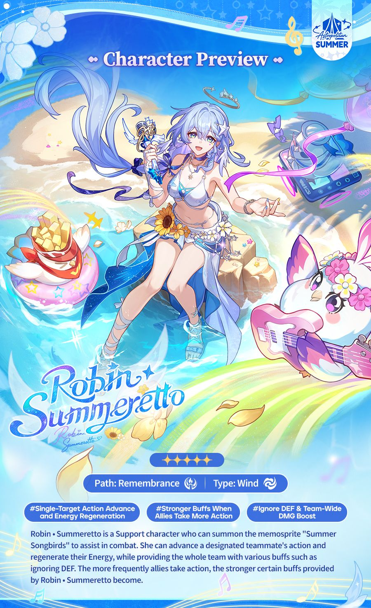
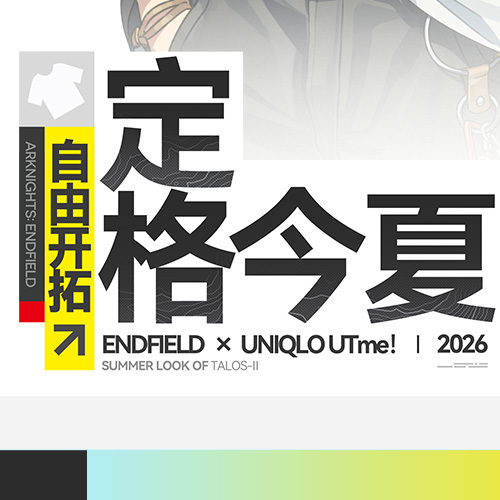
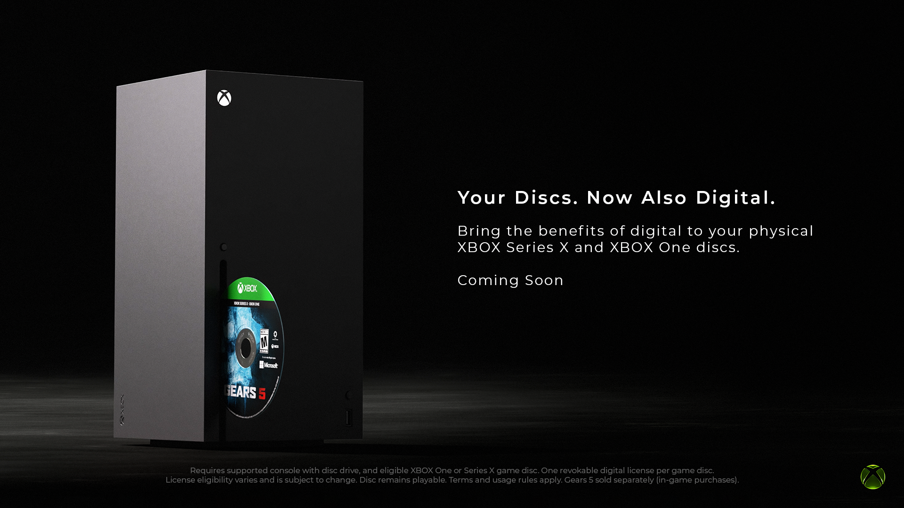
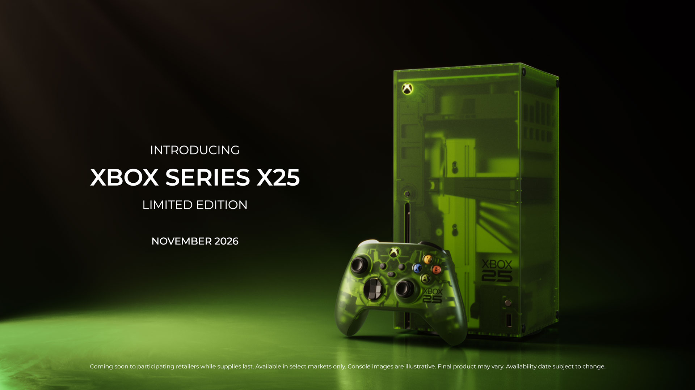
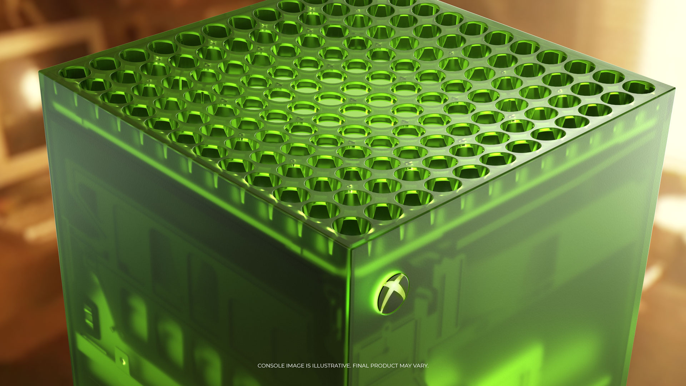
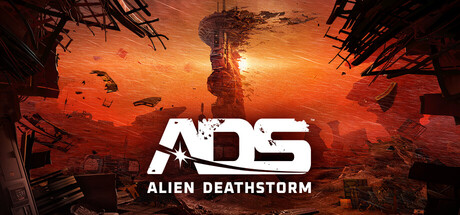
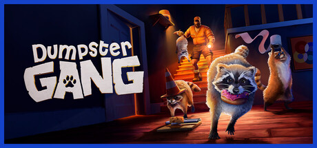
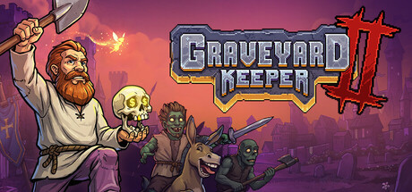

🔥🔥
GLM-5.3-Flash
Z.ai 官方 8/26 发布 GLM-5 系列首个原生多模态。
- 规模
- 320B/18B
- 认领
- ox-alpha
- 许可
- MIT
- 基准
- 厂商自报
今日有新旗舰：GLM-5.3-Flash（官方认领 Ox Alpha）。今日无新 MCP/Skill 推荐。
GTA6 Extended Look 截稿未播，不预写。游戏开发本轮露 Tab：cs.GR 周四 2 条。本版按“全轴扫描、增量展示”：53 个轴 / 子轴完成扫描，页面只显示有新增 Signal 的模块。
今日有新旗舰：GLM-5.3-Flash（官方认领 Ox Alpha）。今日无新 MCP/Skill 推荐。
GTA6 Extended Look 截稿未播，不预写。Qwen3.8-Flash-Next 不是旗舰。
Z.ai 官方 8/26 发布 GLM-5 系列首个原生多模态。
One / Series X 实体盘可领数字授权。
大众预购 8/27 07:00 PDT。
官方 Aug 26 完整技术报告。
官方微博 8/26 11:00 确认已开启。
Where Winds Meet 全球超 1 亿玩家。
| 观察库 | 独立 Signal | 密度 | 结构性判断 |
|---|---|---|---|
| AI 观察 | 9 | 高 | 旗舰 GLM-5.3-Flash（Ox Alpha）；无新 MCP/Skill 推荐；HF 事件报告 + Qwen 架构预览 + Transcribe 专用 STT + Chrome/Cowork 浏览器产品 + Codex 0.150 稳定；周四 arXiv 列表首见 |
| 二次元游戏观察 | 2 | 中 | 星铁 4.5 已开启；终末地×优衣库 UTme! 全国门店 8/27 起扩开 |
| 游戏开发观察 | 2 | 中低 | cs.GR 周四 2 条 |
| 游戏行业观察 | 10 | 高 | Xbox Disc to Digital + X25 套装锁价档 + 燕云 1 亿 / Ch.3 9/16 + 独立游戏观察（Dumpster Gang / Terrible Lizards / Chosen by Odin / Neon Abyss 2 / Kingdom III / Graveyard Keeper II / PixelJunk Monsters 3）+ 1047 Games 停更 Empulse / Splitgate |
时间边界：本期左开右闭（2026-08-26，2026-08-27]，覆盖 1 天。今日有新旗舰：GLM-5.3-Flash（Ox Alpha）。今日无新 MCP/Skill 推荐。补入核：GLM-5.3-Flash（Ox Alpha）；星铁 4.5 已开启（8/26 11:00）；OpenAI HF 事件技术报告；Qwen3.8-Flash-Next；Gemini 3.5 Transcribe；Claude in Chrome GA / Cowork 内置浏览器；Codex rust-v0.150.0（8/27 03:37 CST）；arXiv 周三 26 Aug 列表首见；周四 27 Aug arXiv 列表首见；cs.GR 周四 2608.25203 / 2608.25461；MCP CVE 窗内新条；优衣库全国 8/27 起；Xbox Day 1 平台政策与定档；Kingdom III / Graveyard Keeper II / PixelJunk Monsters 3；1047 Games 停更 Empulse / Splitgate。独立 Signal 23。高 Attention 6。显示观察库 4。Grok Bot 套餐扩容与 arXiv 周三首见写在 AI 库头，不单列。GTA6 Extended Look 未播不预写。
今日有新旗舰：GLM-5.3-Flash（官方认领 Ox Alpha）。今日无新 MCP/Skill 推荐。
周四 27 Aug 列表已切日，见论文轴。Sat 22 / Sun 23 仍缺席。Codex 0.150-alpha / 0.151.0-alpha 仅登记，不升 Signal。
OpenAI 正式发布 Hugging Face 事件完整技术报告。
关注度 5 · 本版火苗上限 🔥🔥。行业/安全最高信号；不是模型发布。不写利用步骤。
NVD 登记多条第三方 MCP 相关 CVE，含 8/26 新条 CVE-2026-80347。
延续「MCP 服务端默认配置 / 校验层失败」主题；非官方生态核心包为主。关注度 3 · 🔥。
Z.ai 发布 GLM-5 系列首个原生多模态模型 GLM-5.3-Flash，并认领 ox-alpha。
ox-alpha 在 OpenCode / OpenRouter 匿名测试。厂商自报 AA 折后约 $0.045 / task。| 评测项 | GLM-5.3-Flash | GLM-5.2 | Claude Opus 4.8 | Gemini 3.7 Flash |
|---|---|---|---|---|
| DeepSWE v1.1 | 63.4 | 46.2 | 58.0 | 65.3 |
| AutomationBench v1.0.6 | 48.8 | 26.2 | 41.0 | 52.3 |
| Terminal Bench 2.1 | 84.3 | 81.0 | 85.0 | 85.8 |
| Z.ai Code Bench max effort | 29.0 | 未核 | 29.5 | 未核 |
| AA Index v4.1.1 | 57 | 未核 | 未核 | 未核 |
| OfficeQA Pro | 62.4 | 未核 | 48.9 | 未核 |
数字来源：厂商自报（Z.ai 2026-08-26 博文）
今日有新旗舰。官方旗舰档 Flash 变体 + 开源权重 + 认领 Ox Alpha。基准为厂商自报。关注度按版式上限 🔥🔥。
Qwen 开源 Qwen3.8-Flash-Next，定位为将 underpin Qwen4 的架构实验预览。
Qwen/Qwen3.8-Flash-Next。另见 qwen.ai 博客。无已核对照：模型卡只有本模型自报，未点名主流对照数字。
本条是开源架构预览 / 效率实验，不是旗舰落款。今日旗舰是 GLM-5.3-Flash。关注度 4 · 🔥。
Google 发布专用语音转写模型 Gemini 3.5 Transcribe。
gemini-3.5-transcribe-live（Live API 实时双向流）与 gemini-3.5-transcribe（Interactions API，预录、说话人归属、词级时间戳）。无已核对照表。官方/AA 口径相对 Chirp 3 最终转写时延约 70%；流式 WER 未核。
专用音频模型，不是 Gemini 旗舰 LLM → 计入模型轴，不是 Gemini 旗舰 LLM。关注度 4 · 🔥。
Claude in Chrome 正式一般可用。

Agent 浏览器能力产品化；不是 MCP/Skill 推荐包。关注度 4 · 🔥。
Claude Cowork 桌面端侧栏内置独立浏览器。
平台浏览器能力；不是可安装 MCP/Skill 推荐。关注度 4 · 🔥。
Codex CLI 0.150.0 稳定版发布。
@ 提及其他 Codex tasks，并读写 / 创建 / 发消息给 tasks；/copy 支持整段回复 / 代码块 / 引用块选择器。/rename 可基于对话建议标题；支持终端内可点击 Markdown 链接；快捷键循环 permission modes；Vim 模式 . 重复上次编辑。昨日待核「Codex 0.150 稳定 tag」已兑现。同窗 alpha（0.150-alpha.12+、0.151-alpha）不升 Signal。MCP 相关修复记编程轴，不算 MCP 推荐。关注度 4 · 🔥。
arXiv 周四 27 Aug 列表本轮已切日，晨扫时 /new 仍停 Wednesday。
huggingface.co/papers/date/2026-08-27 仍是周三清单社区策划，不是本条周四 dump。晨扫明文「周四 27 Aug 截稿仍未切日」。本轮一线 /new 已切，按纪律首见升格。不复述周三 26 Aug。不升 MCP/Skill 推荐。Sat 22 / Sun 23 仍缺席。
星铁 4.5「挥掷千星的筹码」已开启；终末地×优衣库 UTme! 全国门店 8/27 起扩开。
正名 提弗洛斯 // Typhoeus；噗切娜 // Purrchena。绝不写提丰。
《崩坏：星穹铁道》4.5「挥掷千星的筹码」官方确认已开启。

开服确认。不复述 07:00 版本更新说明、8/24 预下载&停服预告、8/14 前瞻正文。关注度按版式上限 🔥🔥。
终末地×优衣库 UTme! 联名图案 8/27 起登录全国定制门店。

全国扩店确认。不复述 8/23 宣布文、8/25 11:02「现已开启」+沪穗一日店长。关注度 3 · 🔥。
一线引擎博客窗内空。cs.GR 周四清单下午首见，主分类新投 2 条进今日核心。
NVIDIA 窗内 AI/机器人/LLM 稿不是游戏渲染，不升格。
cs.GR 周四主分类新投：Zakharov 正则对 + Craig–Sulem DNO 做 2D 欧拉波与局部 3D NS（NB-FLIP）双向耦合。
cs.GR 周四清单下午首见。关注度克制 · 🔥。
cs.GR 周四主分类新投：参考引导的局部几何条件纹理补全，有 Blender add-on 试点。
cs.GR 周四清单下午首见。关注度克制 · 🔥。
Xbox @ gamescom Day 1 已播；GTA6 Extended Look 截稿未播。
中厂新作留在新游 / 定档。独立游戏观察单独出轴。
1047 Games 宣布停更 Empulse 与 Splitgate: Arena Reloaded，从活服射击转出。
轴 4 活服射击商业模式退场 + 精确关服日。非雷达大厂。关注度克制 · 🔥。
Xbox 官宣 Disc to Digital：实体盘可领取数字授权。

轴 12 平台级所有权 / 保存政策。非新硬件、非已定档预告。关注度按版式上限 🔥🔥。
Xbox 25th Anniversary Collection 锁价并开放大众预购窗。


官方锁价 + 日历日 + 预购窗。与 Disc to Digital 同场两大平台新闻。关注度 🔥🔥。
《Where Winds Meet / 燕云十六声》官方宣布全球超 1 亿玩家，并锁 Hidden Mountain Chapter 3 于 9 月 16 日上线。
雷达相关发行方（网易）活服精确日 + 达门槛用户里程碑。关注度 🔥🔥。
Rebellion 将《Alien Deathstorm》从「2027」收到春 2027。

轴 6 中厂新作，留在新游 / 定档，不进独立游戏观察。关注度克制 · 🔥。
Xbox Day 1 定档两作独立游戏：Dumpster Gang、Terrible Lizards。

轴 7 独立游戏观察。关注度克制 · 🔥。
窗内另有两作达门槛的独立游戏发布观察：Chosen by Odin、Neon Abyss 2。
轴 7 达「新作公布 / 主机首发窗」门槛。两条合成一条，避免小品通胀。关注度克制 · 🔥。
Fury Studios / Raw Fury 首曝 Kingdom 系列正统续作，2027；PS5 / Xbox Series / Switch 2 / Steam。
轴 7 高权重。知名独立系列编号续作 + 一线发行 + 多平台首曝。关注度克制 · 🔥。
tinyBuild / Lazy Bear 锁 9/22；PS5 / Xbox Series / Switch 2 / Switch / Steam 五平台同步。

轴 7 精确日续作。关注度克制 · 🔥。
Q-Games 在 FGS 8/26 世界首曝；手绘 4K 塔防回归 + 肉鸽；Steam；Discord 试玩 9/4–9/9。
轴 7。FGS 世界首发的百万独立 IP 续作。晨扫未单开此作。关注度克制 · 🔥。